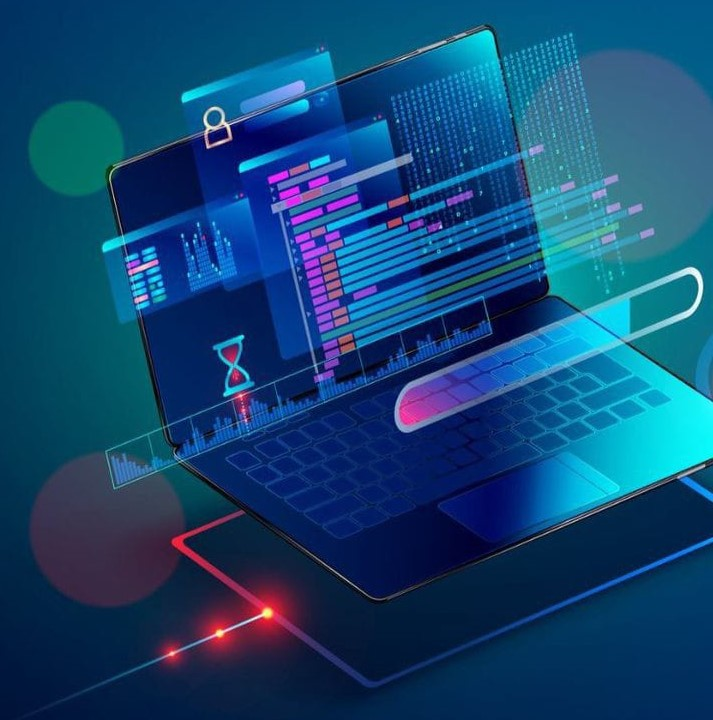

¡Hola! Mi nombre es Paula Andrea Sanchez Torres
Tengo 20 años y Soy estudiante de la Universidad Distrital Francisco José de Caldas, donde actualmente estoy cursando la carrera de Tecnología en Sistematización de Datos.
A medida que avanzo en mi formación académica, he descubierto un fuerte interés por el desarrollo front-end y deseo especializarme en esta área. Me emociona la idea de crear interfaces de usuario atractivas y funcionales que brinden una excelente experiencia a los usuarios.
A continuación veras algunos de los proyectos personales que deseo desarrollar:
Portafolio
El objetivo principal de este proyecto es exhibir y presentar los proyectos finalizados, demostrando así las tecnologías aprendidas durante el proceso de desarrollo, junto con sus respectivos procesos.
Rastreador de direcciones IP
Este proyecto aprovechará tecnologías como HTML, CSS, JavaScript (JS) y API para desarrollar una aplicación de seguimiento de direcciones IP. El objetivo principal es crear una aplicación funcional que permita a los usuarios rastrear y obtener información relevante sobre direcciones IP específicas.
Juego de piedra, papel o tijera
El propósito de este proyecto es desarrollar una versión del popular juego "Piedra, Papel y Tijera". Durante el proceso de desarrollo, se utilizarán herramientas como HTML, CSS, JavaScript y React para crear una experiencia interactiva y atractiva para los jugadores.